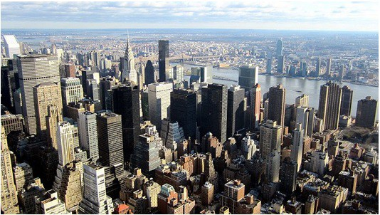
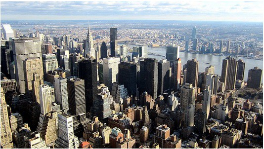

הבנייה חברתית של המציאות = התקשורת מבנה מציאות
התקשורת אינה מראה את המציאות כפי שהיא, אלא מעצבת תמונה מסוימת של המציאות.
אנחנו נגישים רק למציאות הקרובה לנו (משפחה, חברים, בית הספר, שכונה). כל מה שחורג מכך נגיש לנו רק באמצעות התקשורת ולכן אנחנו נחשוב על המציאות הזו לפי מה שמוצג בתקשורת.
התקשורת מציגה את המציאות בצורה מסוימת, ובכך מבנה אצלנו תמונה כאילו זו המציאות האמיתית.
כיצד מתבצעת ההבנייה?
התקשורת משתמשת במרכיבי השפה התקשורתית: טקסט, צילום, עריכה, ליהוק ועוד, כדי לבנות תמונה של המציאות. התהליך הזה מקיף כל אחד מאיתנו.
זה נכון לכלל הז'אנרים ואמצעי התקשורת:
- כאלו שמבקשים לתאר מציאות – חדשות
- ז'אנרים בדיוניים – קולנוע, סדרות דרמה
- מדיה שנשענים על המציאות – פרסום, ריאליטי
התקשורת מבנה לנו מציאות – למי יש סמכות להופיע בטלוויזיה ולספר לנו מה המציאות?
(למשל: נשים צעירות, לבושות בחליפות, יפות, בהירות, עברו בגלי צה"ל וכו')


הבניית מושגים חברתיים
הבניית הגבריות
אילו גברים רואים בתקשורת? כיצד היא מבנה את המושג "גבריות"? בדרך כלל: צעירים, שריריים, חזקים, סמכותיים, לובשים חליפה או בלי חולצה כלל.
 

הבניית הפחד והביטחון
אם התקשורת מלאה בתכנים אלימים ומפחידים – אנחנו, האזרחים, נקבל את המציאות כמקום מאיים ומפחיד. אולי גם נעניק סמכויות לכוחות הביטחון ביתר קלות כדי שיגנו עלינו.
הבניית ההצלחה
כיצד התקשורת מתארת "הצלחה"? בדרך כלל בדיווחי חדשות, בסדרות דרמה, בריאליטי ובכתבות בידור:
- חברות הייטק (סיפורי סינדרלה)
- החלום האמריקאי / הצלחה בעולם
- תחומי הספורט והדוגמנות
- כמעט תמיד הצלחה = הרבה כסף.
התקשורת לא מראה את אלפי החברות שנסגרו, אלא רק את האקזיטים הגדולים. היא מקבעת את המשוואה שהצלחה נמדדת בכסף, למרות שהיא יכולה להימדד גם באושר, נינוחות, בריאות ועוד.
סטריאוטיפים: "כמו בת"
דוגמה כיצד אנשים מאמצים תדמיות והבניית מציאות על פי סטריאוטיפים.
נשים וילדות התבקשו לבצע משימות שונות "כמו בת". ראו כיצד הן ביצעו זאת והשוו לביצוע של נערות בוגרות יותר.
play_circle_filledALWAYS #LIKEAGIRL - כמו בת (גרסה מלאה)
לחץ לצפייה בסרטוןנקודות למחשבה:
- מדוע הביטוי "כמו אישה" או "כמו ילדה" קיבל משמעות של גנאי?
- מדוע גם נשים מקבלות את הבניית המציאות הזו למרות שהן נשים בעצמן?
הבניית המרחב: העיר האמריקאית
אם נתבקש לצייר עיר טיפוסית בארה"ב, סביר שנקבל תמונה של גורדי שחקים וצפיפות ("אורבניות").

זאת למרות שהרוב המכריע של האמריקאים מתגורר בבתים צמודי קרקע בפרברים ולא במרכזי הערים.

מכיוון שמרבית הסרטים והסדרות מתרחשים בערים הגדולות, התקשורת הבנתה אצלנו תמונת מציאות שגויה לגבי המגורים האמריקאיים הטיפוסיים.
למה זה קורה? (לא קונספירציה)
חשוב לזכור: לא יושבים אנשים בחדר חשוך ומתכננים כיצד להבנות את המציאות. זה קורה בגלל שתי סיבות עיקריות:
1. אילוצי הפקה ורייטינג
רוצים כסף ורייטינג, לכן מלהקים כוכבים מושכי קהל, צעירים ויפים. יש תקציב מוגבל לכתבים בחו"ל (למשל כתב אחד בלונדון יסקר את כל אירופה), ולכן אנו רואים רק חלק קטן מהעולם.
2. הגמוניה
בכל חברה יש נורמות תרבותיות (מהו יופי, מהי הצלחה). התקשורת פונה למיינסטרים (למרכז) כדי להגיע למקסימום קהל. לכן היא נוטה לשקף את הנורמות המקובלות ולא לאתגר אותן. בכך היא משרתת את נקודת המבט השולטת (החזקה) בחברה (למשל: גברים, בעלי ממון).
לסיכום: אין לנו אפשרות להגיע למציאות המורכבת באופן ישיר. אנחנו סופגים את העולם דרך התקשורת. עלינו לזכור שזו הבנייה של המציאות ולא המציאות עצמה, ולהיות ביקורתיים: לשאול מה מוצג? למה דווקא זה? ולמה דווקא כך?